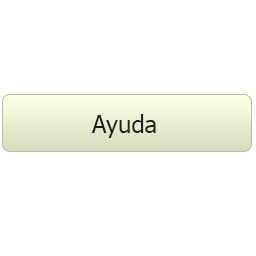

La zarzamora es un arbusto que forma tallos de hasta 4m que acaban arrastrándose por el suelo y que están llenos de espinas. Las flores, rosadas o blancas, forman unas bayas que en realidad son la agrupación de muchos pequeños frutos negros.
La zarzamora pertenece a la familia de las Rosáceas, y su nombre científico es Rubus fruticosus. La planta es un arbusto sarmentoso con tallos de 3-4 metros de largo. Estos tallos crecen erectos al principio, aunque se van tumbando y al final se arrastran sobre el suelo. Son angulosos y con fuertes espinas.
Las hojas son caducas y alternas, y están compuestas por 3-7 foliolos ovalados o elípticos que presentan el borde dentado.